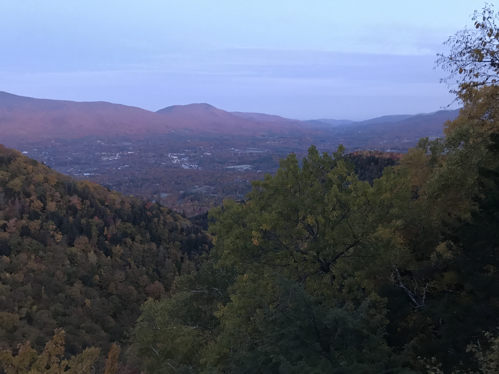
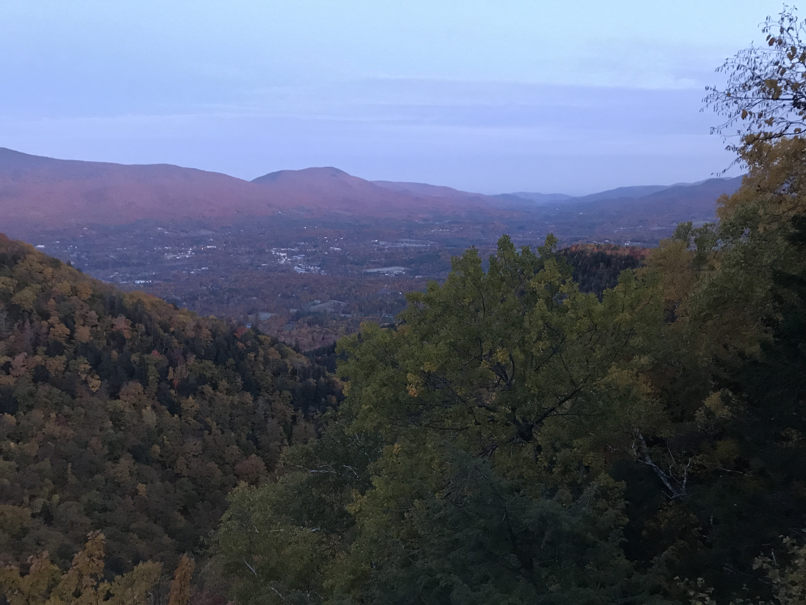

Distance
Distance Elevation
Elevation Observed Wildlife
Observed Wildlifeto
This is my favorite backcountry experience with my partner. So much has to do with the fact that we took it easy with the mileage and elevation. After the first day, it is not challenging. We were able to slow down and enjoy the Vermont woods as everyone should.
Day 1 - 10.0 miles - 6 hours, 44 minutes


We started this hike by dropping our packs at the Lye Brook Falls Trailhead and parking at the Prospect Hill Trailhead at the start of Old Rootville Road. Then we walked down Rootville Road, turned left on East Manchester Road, left onto Glen Road, and continued straight on Lye Brook Falls Road to return to our packs amid the heavily trafficked trailhead. We strapped on our packs and started the climb to Lye Brook Falls.


The scenery was spectacular. Indigenous Peoples Day (Columbus Day) Weekend is prime foliage season in these parts and the multicolored leaves attracted peepers in droves. The crowded trail was wide and followed an old logging road. When we reached the spur to Lye Brook Falls we dropped our packs and descended to the falls. The falls themselves are gorgeous and tucked away in the woods. They did not flow strongly, but descended down an extended step of bedrock. Amidst the crowd there were many spots to sit and enjoy the falls. We climbed up to get a view of the top then down to some rocks to see the water flow away and down Lye Brook.

We hiked back up the spur, said goodbye to the crowds, and continued up Lye Brook Trail. We continued to gain elevation and didn’t see another soul until reaching Bourn Pond. The trail was not strenuous, but we definitely had to work to reach our destination. Once at Bourn Pond, navigation became tricky. We eventually found Branch Pond Trail and turned left onto it before we came across South Bourn Pond Tent Site. There was space for possibly twenty campers, but a sizable group had already set up so we decided to proceed to find other sites. We passed the most perfect, but occupied, site which sits on the shore of the pond just before the shore turns away from the trail. We eventually picked an unestablished, flat spot along the shore. We could have continued a short way further to find the actual North Bourn Pond Tent Site. We set up our hammock and enjoyed one of my favorite mountain pond experiences. The pond's surface was still and reflected the beautiful sky.
Day 2 - 2.0 miles - 2 hours, 54 minutes

We survived our chilly night and awoke to Bourn Pond’s increasing beauty with the colors of the rising sun and steaming surface. We only had a flat two-mile hike to William B. Douglas Shelter and took our time getting up and out on the trail. We began moving at 10:20AM and headed north up Branch Pond Trail. We encountered no peaks or vistas, but it was no matter. In many places the scenery included golden fallen leaves at our feet, yellow leaves hanging on the brush, and orange foliage above us. The forest opened a few times in the form of swamps and small fields.


Immediately after one field, almost to the shelter, we found two interesting bent trees. We took our only significant break of our hike to enjoy a charcuterie board consisting of Cabot cheddar cheese, peperoni, and Triscuits with the Triscuit box serving as the board. We washed it down with a fine Black Box wine. We decided to enjoy the luxury backpacking spread in one of the interesting trees and deemed the dining experience Charcutetree.


We reached the shelter by 1PM and enjoyed the sunny day and gorgeous woods without the need to hike any further. The shelter itself was well maintained and had a large fire ring immediately outside of it. There was a huge, brand new privy, which is better described as a toilet cabin, that was a walk up the hill. Other sites were sprinkled about the open area, which other campers claimed. We spent the mid afternoon hammocking along the shore of a stream below the shelter. It was tough to find the perfect spot that was along the water and in some sunlight. Another hiker joined us in the shelter and it was nice to have more company. We ended the evening with a big fire and fell asleep not long after the sunset. This ended one of the most enjoyable and relaxing full days I’ve had in the backcountry.
Day 3 - 3.6 miles - 3 hours, 15 minutes
We had packed away as much as we could the night before to make it easy to begin our hike in the dark. We awoke before 6AM and quietly packed up in order to avoid disturbing our bunkmate. Much of the trail was flat and wide and we were able to turn off our headlamps to hike much of it by moonlight. We arrived at Prospect Rock by 6:45AM with a clear view of the town below, the colorful surrounding hills, and full moon as it set behind the mountains. As our vista faced west, we were able to watch the sunlight creep over the hills behind us and see the valley light up as we enjoyed hot beverages and an early morning snack.
 



An hour later, we were compelled to continue by the thought of a hot diner breakfast. We descended the wide and steep Old Rootville road to our awaiting car. By 9AM we were at the closeby Bob’s Diner. The breakfast was beyond delicious. Find my review on Google Maps, Robert Emery - local guide, if you really want to capture my satisfaction. This three day backpack was an awesome way to enjoy New England fall foliage at it’s finest and a wonderful way to enjoy the woods.